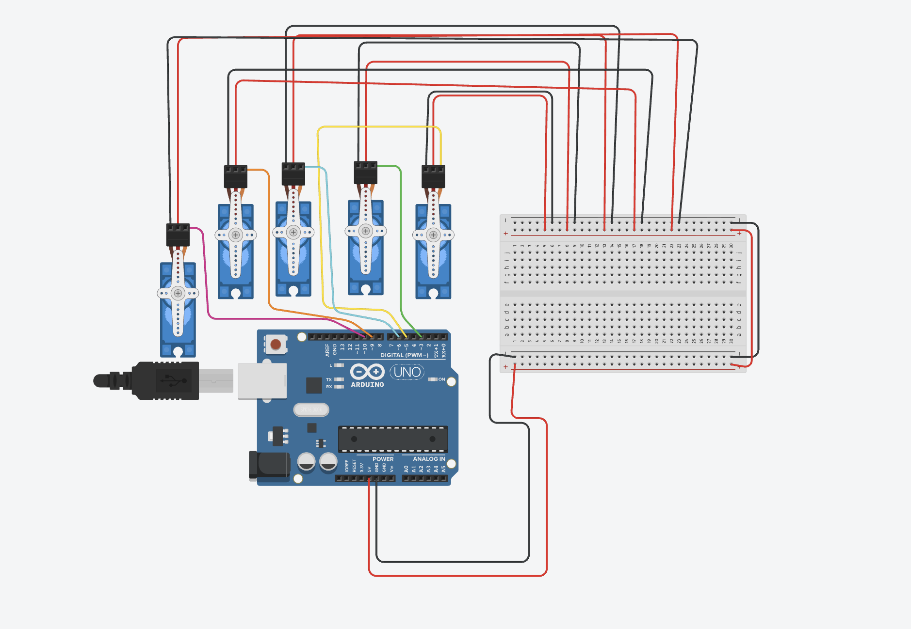

Guía de trabajo
Título de la práctica: Brazo dinosaurio
Modalidad: Individual o por equipos
Duración estimada: 4 a 6 sesiones
El código de esta práctica está preparado para un brazo con un servo. Ajusta los ángulos según tu mecanismo físico.
Producto final identificado
Diseñar un brazo de dinosaurio que reaccione cuando un participante se acerca, combinando movimiento, luz y sonido para crear una señal de sorpresa o advertencia.
Objetivo 1: Investigar reacciones mecánicas seguras
Descripción: Analizar ejemplos de barreras, figuras animadas o mecanismos que pasan del reposo a una acción. Identificar qué hace que el movimiento sea visible sin ser peligroso.
Entrega: Lista de tres reglas de seguridad y dibujo de una reacción de reposo, ataque y regreso.
Evaluación: Las reglas consideran distancia del público, límites del movimiento y firmeza de la estructura.
Objetivo 2: Planear la activación por proximidad
Descripción: Elegir una zona de activación de hasta 25 cm y una zona de reinicio más lejana. Representar qué debe hacer el sistema antes, durante y después de detectar a una persona.
Entrega: Diagrama de flujo con reposo, detección, activación, regreso y reinicio.
Evaluación: El plan evita activaciones continuas y explica cuándo el brazo queda listo para reaccionar otra vez.
Objetivo 3: Diseñar el brazo y sus conexiones
Descripción: Revisar el diagrama eléctrico y diseñar una estructura ligera que el servo pueda mover. Definir la ubicación del sensor, LED, buzzer y punto de giro.
Entrega: Diagrama etiquetado y boceto lateral del brazo con medidas aproximadas y sentido de movimiento.
Evaluación: El diseño incluye todos los componentes, deja libre el recorrido y usa un brazo suficientemente ligero para el servo.
Objetivo 4: Probar sensor, señales y servo
Descripción: Comprobar por separado la lectura de distancia, el encendido del LED, el sonido del buzzer y el movimiento del servo entre dos ángulos seguros.
Entrega: Lista de verificación de los cuatro componentes y tabla con los ángulos iniciales de reposo y ataque.
Evaluación: Los componentes funcionan de forma individual, la distancia se mide correctamente y el servo no llega a sus límites físicos.
Objetivo 5: Construir la secuencia de movimiento
Descripción: Programar el avance del brazo, la pausa y el regreso al reposo. Agregar el LED y el sonido para que acompañen la reacción.
Entrega: Video de la secuencia activada manualmente y registro de los ángulos y tiempos usados.
Evaluación: El brazo completa la ida y el regreso, las señales se activan durante la reacción y el mecanismo conserva su estabilidad.
Objetivo 6: Integrar la detección automática
Descripción: Unir la lectura ultrasónica con la secuencia completa. Probar que el brazo se active una sola vez al entrar en la zona y se prepare de nuevo al alejarse.
Entrega: Tabla de pruebas con objeto lejos, objeto cerca, objeto que permanece cerca y objeto que vuelve a alejarse.
Evaluación: La reacción ocurre al cruzar el umbral, no se repite sin control y vuelve a estar disponible después del reinicio.
Objetivo 7: Mejorar seguridad y efecto
Descripción: Ajustar el umbral, los ángulos y la velocidad. Fijar cables y estructura, y comprobar que el participante pueda observar el efecto sin tocar la zona móvil.
Entrega: Lista de dos mejoras aplicadas y video de tres activaciones completas desde diferentes distancias.
Evaluación: El brazo se mueve con estabilidad, se detiene dentro del recorrido seguro y responde de manera consistente.
Materiales
- 1 Arduino Uno
- 1 sensor ultrasónico HC-SR04
- 1 servomotor SG90, MG90S o similar
- 1 LED rojo
- 1 resistencia de 220 ohms
- 1 buzzer pasivo
- Protoboard
- Cables Dupont
- 1 cable USB
- Fuente externa regulada de 5 V si el servo lo requiere
- Estructura mecánica del brazo
Descripción general
El brazo permanece en reposo mientras no detecta objetos cerca. Cuando el sensor identifica una distancia menor al umbral, el servo mueve el brazo, el LED enciende y el buzzer emite una alerta breve.
Explicación del funcionamiento
El sensor ultrasónico mide la distancia constantemente. Si un objeto entra en el rango definido, se llama a la función activarBrazo. Esta función mueve el servo entre dos ángulos, activa el LED y genera sonidos. Al terminar, el brazo vuelve a su posición inicial.
Espacio para diagrama
Al subir el archivo del diagrama con este nombre, se mostrará automáticamente en esta sección.

Código completo
#include <Servo.h>
// ===== BRAZO DINOSAURIO CON SENSOR =====
// -------- Pines --------
const int TRIG = 9;
const int ECHO = 10;
const int PIN_SERVO = 6;
const int LED_ALERTA = 4;
const int BUZZER = 8;
// -------- Configuración --------
const int DISTANCIA_ACTIVACION = 25;
const int ANGULO_REPOSO = 20;
const int ANGULO_ATAQUE = 110;
Servo brazo;
bool brazoActivado = false;
long medirDistancia() {
digitalWrite(TRIG, LOW);
delayMicroseconds(2);
digitalWrite(TRIG, HIGH);
delayMicroseconds(10);
digitalWrite(TRIG, LOW);
long duracion = pulseIn(ECHO, HIGH, 30000);
if (duracion == 0) {
return -1;
}
return duracion / 58;
}
void sonidoAlerta() {
tone(BUZZER, 900);
delay(90);
tone(BUZZER, 1300);
delay(90);
tone(BUZZER, 700);
delay(130);
noTone(BUZZER);
}
void activarBrazo() {
digitalWrite(LED_ALERTA, HIGH);
sonidoAlerta();
for (int angulo = ANGULO_REPOSO; angulo <= ANGULO_ATAQUE; angulo += 5) {
brazo.write(angulo);
delay(25);
}
delay(350);
for (int angulo = ANGULO_ATAQUE; angulo >= ANGULO_REPOSO; angulo -= 5) {
brazo.write(angulo);
delay(25);
}
digitalWrite(LED_ALERTA, LOW);
}
void setup() {
Serial.begin(9600);
pinMode(TRIG, OUTPUT);
pinMode(ECHO, INPUT);
pinMode(LED_ALERTA, OUTPUT);
pinMode(BUZZER, OUTPUT);
brazo.attach(PIN_SERVO);
brazo.write(ANGULO_REPOSO);
digitalWrite(LED_ALERTA, LOW);
noTone(BUZZER);
}
void loop() {
long distancia = medirDistancia();
Serial.print("Distancia: ");
Serial.print(distancia);
Serial.println(" cm");
if (distancia > 0 && distancia <= DISTANCIA_ACTIVACION && !brazoActivado) {
brazoActivado = true;
activarBrazo();
}
if (distancia == -1 || distancia > DISTANCIA_ACTIVACION + 10) {
brazoActivado = false;
}
delay(80);
}Producto final
Descripción: Brazo animado con servomotor, sensor ultrasónico, LED y buzzer que reacciona al detectar proximidad y después regresa al reposo.
Entrega:
- Enlace de Drive con video del brazo armado y su activación por proximidad.
- Enlace de Tinkercad del circuito y código, si se realizó en simulador.
- Documento o texto en Drive con los ángulos usados para reposo y ataque.
- Los enlaces deben permitir acceso a cualquier persona que los tenga.
Evaluación: El sensor activa el brazo en el rango definido, el servo ejecuta la reacción y regresa al reposo, el LED y el buzzer acompañan la acción y el montaje es estable.
Preguntas de reflexión
Enviar proyecto
Antes de enviar, verifica que los siete objetivos estén completos y que al menos un enlace de Tinkercad o Drive funcione sin solicitar permiso.
Inicia sesión con Google para habilitar el envío.